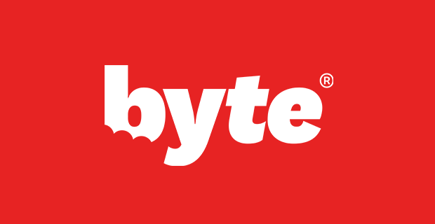

Detailed Analysis of Each Brand
 SmileDirectClub BEST PRICE
SmileDirectClub BEST PRICE
SmileDirectClub is one of the pioneers of at-home invisible aligners. Founded in 2014, the company has already treated over a million patients. Its main advantage is its affordable price and the option to complete the initial evaluation either at home with an impression kit or in one of their many stores with a 3D scan.
Pros:
- Competitive pricing with flexible payment options
- Network of physical stores for 3D scans
- Convenient remote monitoring via the mobile app
- All aligners delivered at once
Cons:
- Customer service sometimes criticized
- Less intensive orthodontic supervision compared to some competitors
- Not suitable for complex cases
SmileDirectClub is ideal for people looking for an affordable solution for minor to moderate corrections, with a convenient process and relatively short treatment duration.
Learn More About SmileDirectClub
Invisalign
Invisalign is the gold standard in invisible aligners, with over 20 years of experience and more than 8 million patients treated worldwide. Unlike other options on this list, Invisalign requires regular visits to an orthodontist or dentist, allowing for personalized monitoring and the ability to treat more complex cases.
Pros:
- Direct supervision by an orthodontist or dentist
- Can treat more complex cases
- Advanced technology with attachments for precise tooth movements
- Long experience and proven results
Cons:
- Significantly higher price
- Requires regular in-office visits
- Generally longer treatment duration
Invisalign is recommended for people with more complex alignment issues or who prefer the security of in-person monitoring by an orthodontic professional.
Learn More About Invisalign
 Byte
Byte stands out with its HyperByte technology, a high-frequency vibration device that, according to the brand, can reduce treatment duration and discomfort. With an average treatment duration of only 3-4 months, Byte offers one of the fastest solutions on the market.
Pros:
- Shorter treatment duration thanks to HyperByte technology
- Lifetime guarantee on results
- Excellent customer service
- Nighttime treatment option available
Cons:
- No physical stores for scans
- Relatively new company with less history
- Effectiveness of HyperByte technology is not universally proven
Byte is particularly suitable for people who want quick results and appreciate the lifetime guarantee offered by the brand.
Learn More About Byte
Candid
Candid has recently shifted its approach to adopt a hybrid model that combines at-home treatment with supervision from a local orthodontist. This "CandidPro" approach aims to offer the best of both worlds: the convenience of at-home treatment and the expertise of a professional.
Pros:
- Supervision by a local orthodontist
- Regular monitoring via the app with AI technology
- High-quality aligners
- More medical than commercial approach
Cons:
- Higher price than other at-home options
- Limited availability depending on location
- Potentially longer process due to coordination with orthodontists
Candid is ideal for those who want a higher level of professional supervision than other at-home options, while avoiding the frequent in-office visits required with Invisalign.
Learn More About Candid